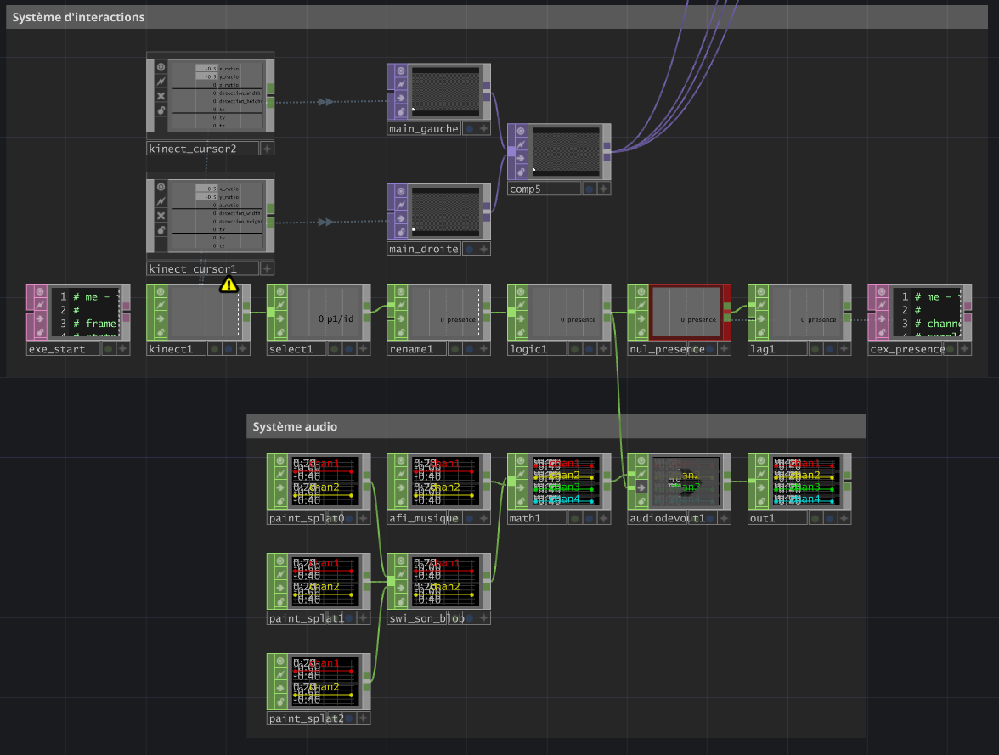
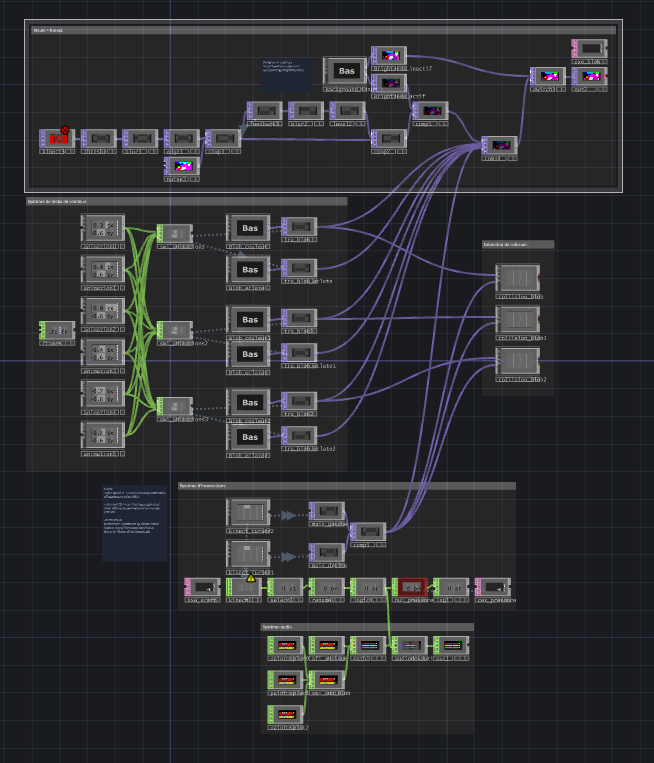
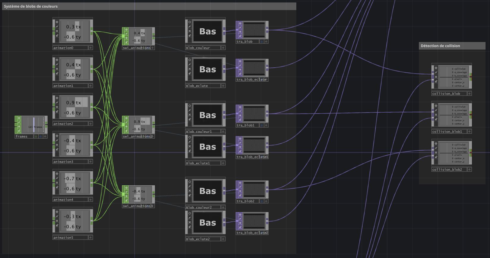

Création d’une expérience interactive à l’aide d’une Kinect
-
2026
-
Médias Interactifs
-
TouchDesigner
-
Kinect
-
Python
-
Scolaire
Sur le projet
Contexte
Polychroma est un projet scolaire dans lequel il fallait concevoir une expérience interactive à l’aide d’une Kinect V2. Ce projet allait ensuite être utilisé sur une murale pour les étudiants qui passaient.
Crédits
Visuels et interactions : Simon Savard-Blondel
Musique : freetouse.com
Sons : soundsnap.com
Déclaration d'utilisation de l'IA
Aucune IA a été utilisée pendant la réalisation de ce projet.
Les étapes de conception
01/05 -
Idéation et inspiration
Je voulais faire une expérience où l’utilisateur interagit avec des couleurs pour «peindre» l’écran, mais sans recréer le logiciel «MS Paint». Je me suis donc inspiré du jeu mobile «Fruit Ninja» que je trouvais être un parfait mix d’interaction utilisateur et peinturage d’écran original.

02/05 -
Création du design visuel
Il fallait créer deux designs visuels pour le projet, un mode inactif et un mode actif. J’ai décidé d’aller avec des masses de couleurs qui bougent par elles-mêmes pour le mode inactif. J’ai assombri l’arrière-plan et je montre la silhouette de l’utilisateur qui s’incruste pour le mode actif.

03/05 -
Création du système d'interactions
J’utilise le même genre de système d’interaction que le jeu «Fruit Ninja». L’utilisateur éclate les boules de couleurs qui apparaissent pour peindre l’écran.

04/05 -
Tests et débogage de Python
Après les premiers tests, je trouve des bugs sur TouchDesigner et le code Python. Je les corrige pour rendre l’expérience agréable.

05/05 -
Finalisation du projet
Quand l’interaction et le visuel sont majoritairement finis et fonctionnels, je rajoute les autres boules de couleurs et la sélection aléatoire des couleurs lorsqu’elles éclatent pour rendre l’expérience plus dynamique, colorée et complète .

Le résultat final
Malheureusement, lors du filmage du showcase, il y a eu un bug qui faisait en sorte que la partie interactive du projet ne s'affichait pas. Cette vidéo sera mise à jour lorsque le problème sera réglé.
Les défis
Les défis principaux du projet étaient de faire fonctionner correctement le système d’interaction, la calibration des proportions entre TouchDesigner et Kinect ainsi que le code Python.
Les solutions
J’ai réussi à faire fonctionner les interactions en utilisant une détection de collision entre les mains Kinect et les boules de couleurs sur TouchDesigner. La calibration était simplement une question d’arranger la position de la main Kinect en la multipliant par un facteur inférieur à 1 et le code Python était plus facile en utilisant la documentation du langage.
Les apprentissages
J’ai appris à utiliser une Kinect et les données qu’elle donne pour faire diverses interactions sur TouchDesigner. J’ai aussi appris que les résolutions de Kinect et de TouchDesigner ne sont pas les mêmes et je dois y faire attention. J’ai aussi plus de facilité à consulter la documentation de Python lorsque j’en ai besoin.